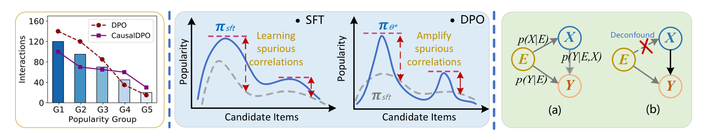
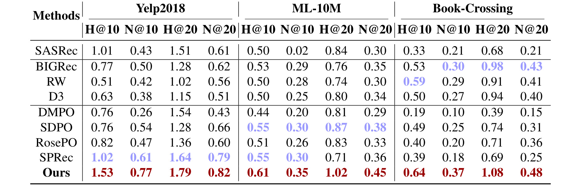
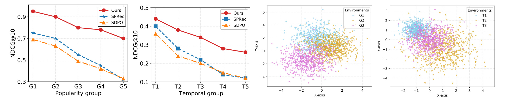
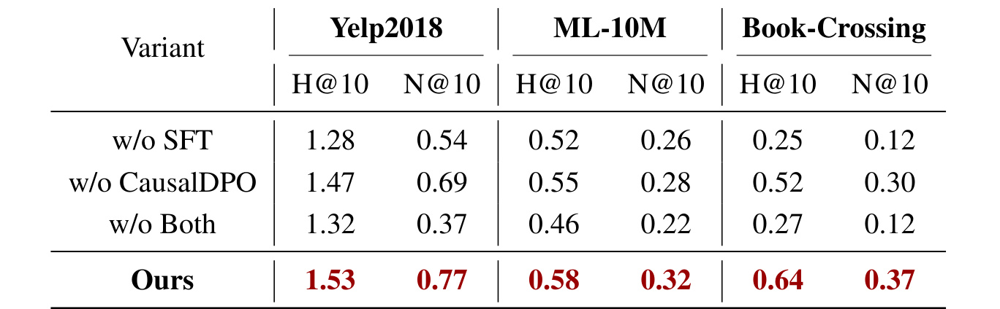
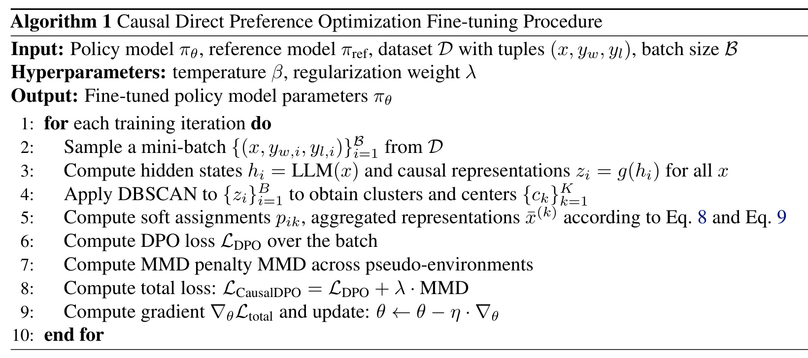

CausalDPO：面向分布鲁棒生成式推荐的因果直接偏好优化
这里精读的是论文《Causal Direct Preference Optimization for Distributionally Robust Generative Recommendation》。中文可以叫《CausalDPO：面向分布鲁棒生成式推荐的因果直接偏好优化》。
论文链接：arXiv:2603.22335
作者：Chu Zhao, Enneng Yang, Jianzhe Zhao, Guibing Guo。
机构：Northeastern University, Shenyang, China；Shenzhen Campus of Sun Yat-sen University, China。本文目录名采用第一作者和通讯作者所在的东北大学作为主机构标识。
来源与日期：arXiv cs.IR / cs.AI，arXiv 页面显示 2026-03-21 提交；PDF 首页标注 Preprint, March 25, 2026。
代码/项目页：已核验公开仓库 https://github.com/user683/CausalDPO 。需要注意，论文摘要写的是“across four evaluation metrics 平均提升 17.17%”，GitHub README 写的是 24.10%；本文事实口径优先采用 PDF 和 arXiv 页面。
本地 PDF：已保存于手动笔记目录
去重状态：未发现历史重复笔记。
0. 导读
这篇论文处理的是 LLM 生成式推荐里一个容易被忽略的问题：用 DPO 做偏好对齐并不一定只会把模型推向“更懂用户”，它也可能把训练数据里的环境偏差放大。推荐数据天然带有很多环境因素，例如时间窗口、流行度、曝光机制、节假日、疫情期间的消费变化、平台策略调整等。这些因素会同时影响用户看到什么、点击什么、购买什么，也会影响模型在监督微调和偏好对齐阶段学到的关联。如果这些关联只是特定环境下成立，模型上线后遇到分布外场景就会失效。
论文把这个问题放在 DPO 框架下重新分析。DPO 在 LLM 对齐里常被视为比 RLHF 更简洁的偏好优化方法：给定 context、正样本 item 和负样本 item，模型被训练为提高正样本相对负样本的概率。生成式推荐正好可以把“用户历史 + 候选 item”构造成这种偏好对。问题在于，DPO 的优化目标会不断强化训练集中“正样本经常和某个环境特征共同出现”的信号。比如热门商品本来就更容易曝光、更容易被点击，DPO 可能进一步把“热门”当成偏好本身，而不是把它当作由曝光环境造成的混杂因素。
CausalDPO 的核心想法是：不要只拟合观测分布下的 p(Y|X)，而要尽量近似干预分布 p(Y|do(X))。其中 X 可以理解为用户上下文和输入特征，Y 是模型生成或排序出来的偏好结果，E 是不可观测的环境混杂变量。论文使用结构因果模型说明 E 同时影响 X 和 Y，因此直接优化 DPO 会沿着 E -> Y 的虚假路径学习。为削弱这条路径，CausalDPO 用 backdoor adjustment 的思想对环境变量做边际化，再用软聚类在没有显式环境标签的情况下推断伪环境，最后用 MMD 不变性正则约束不同伪环境下的策略输出保持一致。
这篇论文值得读的地方不只是“把因果套到 DPO 上”。它尝试回答一个工程上很现实的问题：在没有环境标签、不能做随机对照实验、又要继续利用离线推荐日志的情况下，如何让 LLM 推荐模型少学环境噪声，多学稳定偏好。它的贡献可以概括为三点：第一，经验和理论上指出 DPO 会放大由环境混杂造成的虚假相关；第二，把后门调整、软聚类伪环境和 MMD 不变性学习接入 DPO；第三，在四类分布偏移下验证 OOD 泛化收益。
1. 背景与问题
LLM-based recommender 的路线大致可以分成几类。一类用 LLM 生成或补充用户、物品表征，把大模型知识注入传统推荐；一类把用户历史、协同信号或 item 文本放进 prompt，让 LLM 直接生成下一个 item；还有一类把 LLM 的知识蒸馏到更轻的线上推荐模型。随着生成式推荐发展，SFT 和 DPO 开始被用来让模型更好地对齐用户偏好：SFT 让模型学会推荐任务格式，DPO 则通过正负样本对加强偏好顺序。
标准 DPO 的目标可以写成：提高 y_w 相对 y_l 的策略概率，其中 y_w 是偏好样本，y_l 是非偏好样本，参考模型 pi_ref 被固定。它的优势是不用训练单独 reward model，也不需要复杂的在线采样，直接把偏好数据转成一个稳定的二分类式目标。但在推荐场景里，偏好数据不是实验室里独立同分布采来的。用户看到的 item、能点击的 item、最终被记录为正反馈的 item，都强烈依赖平台曝光和时间环境。
论文里的“环境混杂因素”指的是那些没有被显式建模、但会影响训练数据生成过程的外部条件。流行度是最直观的例子：热门 item 更容易被曝光，曝光更多又带来更多点击，模型训练时看到的正反馈自然偏向热门 item。时间也是常见混杂因素：一段时间内用户兴趣、平台供给、社会事件都可能一起变化。曝光机制同样重要：如果训练日志来自某个旧推荐系统的结果，那么模型看到的“用户选择”已经被旧系统过滤过。
这类混杂的危害在 DPO 中会被放大。SFT 可能先学到环境相关模式，DPO 又进一步根据正负样本对强化这些模式。只要环境特征在训练集中更常和正样本绑定，DPO 梯度就倾向于增加模型对这些特征的依赖。这样得到的模型在 IID 测试集上可能看起来不错，但在 OOD 测试集上容易失效，因为新环境下 p_train(Y|E) 与 p_test(Y|E') 不一致。
从因果图看，论文把问题写成 E -> X、X -> Y、E -> Y 三条关系。X -> Y 是我们想学的稳定偏好机制，E -> X 和 E -> Y 则构成后门路径。直接优化观测分布会让模型同时利用真实偏好和环境偏差。CausalDPO 的目标是阻断或边际化这条后门路径，让模型更接近学习 X 对 Y 的因果作用。
这个问题对工业推荐尤其关键。真实推荐系统经常要面对季节性、活动期、冷启动、热点退潮、平台策略变化、用户迁移等分布偏移。如果一个 LLM recommender 在离线 DPO 中学到的是“某段训练期被大量曝光的 item 更好”，那么它在长尾供给、未来时间窗口或新曝光策略下就会变得不稳。论文因此把“偏好对齐”从单纯优化用户偏好，重新解释为一个带环境混杂的因果学习问题。
2. 核心方法
CausalDPO 的方法可以拆成四步：先解释 DPO 如何放大虚假相关，再把目标改写为后门调整下的干预分布，然后用软聚类从数据中发现伪环境，最后用跨环境不变性约束改造 DPO 损失。
第一步是动机分析。论文给出 Proposition 3.1，说明当训练数据中的环境变量 E 满足偏好偏置时，DPO 会增加模型对环境相关特征的权重，并导致测试环境变化时泛化误差上升。直觉上，如果正样本 y_w 比负样本 y_l 更常和某个环境特征共同出现，那么 DPO 的对比项会把该特征当作区分正负样本的捷径。这个捷径在训练环境里有效，但不是稳定偏好。
第二步是后门调整。理想情况下，我们希望估计 p(Y|do(X))，即对输入 X 进行干预后结果 Y 的分布。do(X) 的作用是切断 E -> X 的影响，让模型不要通过环境造成的输入分布差异来学习偏好。由于真实推荐系统不可能为所有环境重新做随机实验，论文采用观测数据上的 backdoor adjustment：
p(Y|do(X)) = sum_e p_theta(Y_hat | X, E=e) * p(E=e)。
这一步的含义是：不要只在某一个环境下估计偏好，而是把不同环境下的条件偏好按环境先验加权平均，从而减少单一环境对策略的支配。如果 E 可观测，这一步可以显式按环境分组；但真实推荐日志往往没有可靠环境标签，所以论文进入第三步。
第三步是软聚类伪环境。给定一个 batch 中的样本 (x, y_w, y_l)，模型先取 LLM 的隐藏表示 h_i，再通过一个线性因果特征抽取器得到低维表示 z_i = W_g h_i + b_g。论文选择 DBSCAN 做初始硬聚类，因为它不需要预先指定簇数，并且对噪声和非球形簇更鲁棒。得到簇中心 c_k 后，再计算每个样本到各簇中心的距离，并通过 softmax 转成软归属概率 p_ik。
软归属比硬标签更适合这里的目标。真实环境并不一定是离散、干净、互斥的，一个用户行为可能同时受到时间、流行度和曝光策略影响。软聚类允许样本以不同权重属于多个伪环境，也允许训练过程中随着模型表示更新而调整环境划分。论文还用 mini-batch Monte Carlo 的方式估计环境先验 p(E=k)，即把 batch 内样本对第 k 个环境的平均归属概率作为该环境权重。
第四步是策略不变性学习。仅仅估计伪环境还不够，模型还需要被约束为不要对某个环境过拟合。论文引入 Maximum Mean Discrepancy，也就是 MMD，衡量不同伪环境下策略输出分布的距离。最终目标是：
min_theta { L_DPO(theta) + lambda * MMD(p_m, p_m') }。
这里 L_DPO 仍然负责偏好对齐，MMD 正则负责让不同伪环境下的 pi_theta(x, y_w) 分布尽可能一致。换句话说，CausalDPO 没有放弃 DPO 的偏好学习能力，而是在 DPO 上加了一个“跨环境输出要稳定”的约束。lambda 控制偏好拟合和不变性正则之间的权衡。
论文还给出两个理论结果。Proposition 3.2 说明，在优化 CausalDPO 目标时，策略可以满足不变性和充分性：不变性要求不同训练环境中的策略响应趋于一致，充分性要求策略仍保留区分偏好样本和非偏好样本的能力。Proposition 3.3 给出泛化误差界，其中包含经验 Rademacher 复杂度项、有限样本项和训练/测试环境分布之间的 MMD 项。这个误差界强调：如果能压低环境分布差异对应的 MMD，OOD 泛化误差就有更可控的上界。
从训练流程看，CausalDPO 每轮采样一个 mini-batch，计算隐藏状态和因果表示，DBSCAN 发现伪环境，计算软归属和环境聚合表示，再计算 DPO loss 与跨伪环境 MMD penalty，最后用总损失更新策略模型。它的复杂度为 O(B L^2 d + B^2)，其中 B^2 来自 MMD 相关的成对环境一致性计算。论文在 Book-Crossing 上报告 CausalDPO 每 epoch 2971 秒，DPO 为 2482 秒，训练时间增加 19.70%。
3. 图表解读

图 1 是论文的问题动机和因果解释。左侧对比 DPO 与 CausalDPO 在不同流行度分组上的交互频次，G1 是头部热门组，G5 是尾部组。DPO 更容易把交互集中到头部，长尾进一步被压低；CausalDPO 的曲线更平缓，说明它试图削弱流行度混杂。中间部分说明 SFT 先学习环境造成的虚假相关，DPO 再放大这些相关。右侧 SCM 则把问题抽象为 E 同时影响 X 和 Y，通过 do(X) 和后门调整切断 E -> X 对建模的干扰。

表 1 是主结果，覆盖 Yelp2018、ML-10M 和 Book-Crossing 三个数据集的三类 OOD 设置。CausalDPO 在 12 个指标上全部最好：Yelp2018 的 H@10/N@10/H@20/N@20 为 1.53/0.77/1.79/0.82，ML-10M 为 0.61/0.35/1.02/0.45，Book-Crossing 为 0.64/0.37/1.08/0.48。相对于最强基线，论文正文报告 popularity shift 平均相对增益 22.29%，temporal shift 平均增益 24.06%，exposure shift 增益范围为 8.47% 到 23.33%。这些数值说明方法收益主要体现在 OOD 场景，而不是只在普通 IID 切分上调参。

图 2 做了两件事：左半部分看分布偏移下性能曲线，右半部分看伪环境聚类。Popularity group 从 G1 到 G5 代表从头部到长尾，CausalDPO 的 NDCG@10 随流行度下降而下降，但下降更慢；Temporal group 从 T1 到 T5 代表时间段推进，CausalDPO 也比 SPRec 和 SDPO 更稳定。右侧两个散点图展示学习到的伪环境，Yelp2018 上的簇和流行度层次相关，ML-10M 上的簇和时间阶段相关。这支持论文的一个关键假设：即便没有显式环境标签，软聚类也可能捕捉到有意义的潜在环境结构。

表 8 是 SFT 与 CausalDPO 的消融。完整方法在 Yelp2018、ML-10M、Book-Crossing 上分别达到 H@10/N@10 为 1.53/0.77、0.58/0.32、0.64/0.37。去掉 CausalDPO 只保留 SFT 后，三组结果下降到 1.47/0.69、0.55/0.28、0.52/0.30；跳过 SFT 直接偏好对齐则更差，尤其 Book-Crossing 只有 0.25/0.12。这个表说明两阶段都重要：SFT 提供基本推荐能力，CausalDPO 负责在偏好对齐阶段降低环境混杂。

算法 1 把训练过程串起来。每轮从偏好数据中采样 (x, y_w, y_l)，计算 LLM hidden states 和因果表示 z_i，用 DBSCAN 找簇和中心，计算软分配 p_ik 与环境聚合表示，再计算 DPO loss 和跨伪环境 MMD penalty。总损失是 L_CausalDPO = L_DPO + lambda * MMD。这张算法图的意义在于说明 CausalDPO 不是后处理或重排序模块，而是直接嵌入偏好优化过程的训练目标。
4. 实验与结果
论文使用三个公开推荐数据集：Movielens-10M、Yelp2018 和 Book-Crossing。附录表 2 给出规模：ML-10M 有 71,567 条用户序列、10,681 个 item、10,000,054 次交互；Yelp2018 有 31,668 条序列、38,048 个 item、1,561,406 次交互；Book-Crossing 有 278,858 条序列、271,379 个 item、1,149,780 次交互。预处理上，ML-10M 和 Book-Crossing 保留至少 20 次交互的用户，Yelp2018 保留至少 40 次交互的用户；ML-10M 和 Yelp2018 中评分大于 4 视为正样本，Book-Crossing 中评分大于 7 视为正样本。
分布偏移构造有四类。Popularity shift 用 Yelp2018 构造流行度分布变化的 OOD 测试集；Temporal shift 在 ML-10M 中按逆时间顺序取每个用户最新 20% 交互作为 OOD 测试；Exposure shift 在 Book-Crossing 中模拟 fully exposed 测试集，用矩阵分解补全缺失评分来近似非随机曝光变化；Mixed shift 在 Yelp2018 中用 80% popularity-shift OOD 和 20% temporal-shift OOD 混合，模拟多种真实偏移叠加。
基线覆盖三类。传统推荐基线是 SASRec；SFT 相关 LLM 推荐方法包括 BIGRec、RW 和 D3；DPO 优化方法包括 DMPO、SDPO、RosePO 和 SPRec。评估方式沿用已有生成式推荐工作：用 prompt 让 LLM 基于用户历史生成预测 item，再在全 item 空间中映射和排名，指标是 HR@10、NDCG@10、HR@20、NDCG@20。实现细节中，论文使用 Llama-3.1-8B 作为 base model，所有 LLM 方法训练 3 个 epoch，主实验 DPO 都只使用一个负样本，实验节点为 8 张 NVIDIA A800 80GB。
主结果里，CausalDPO 对三类单一 OOD shift 都有稳定收益。Yelp2018 popularity shift 上，最强基线 SPRec 的 H@10/N@10/H@20/N@20 为 1.02/0.61/1.64/0.79，CausalDPO 提升到 1.53/0.77/1.79/0.82。ML-10M temporal shift 上，SDPO 在多个指标上是第二名，CausalDPO 仍提升到 0.61/0.35/1.02/0.45。Book-Crossing exposure shift 上，BIGRec 和 RW 在部分指标上较强，但 CausalDPO 依旧全指标第一。
Mixed shift 结果在附录表 4。CausalDPO 在 H@10、N@10、H@20、N@20 上分别为 0.53、0.24、1.51、0.47。尤其 H@20 从第二名 0.76 提升到 1.51，说明在多重偏移叠加时，因果不变性约束的价值更突出。不过也要注意绝对指标数值整体较低，说明这类生成式推荐全空间映射任务本身很难，不能只看相对提升。
IID 结果在附录表 3。CausalDPO 在 ML-10M 和 Book-Crossing 的 IID 切分上也保持最优，但论文讨论中提到 SASRec 在稀疏数据上仍有优势，原因可能是自注意力加位置编码对稀疏序列用户表征更直接。这个现象提醒我们：CausalDPO 的主战场是 OOD 鲁棒性，不一定替代所有传统序列推荐模型。
消融结果支持方法组件的必要性。去掉 SFT 后，模型基础能力不足，Book-Crossing 指标明显下滑；去掉 CausalDPO 后，偏好对齐阶段不能处理混杂，三个数据集均低于完整方法。附录表 5 还把 CausalDPO 与 Dr.DPO、CPO、SimPO、DPO 及其加 causal regularization 的版本比较。CausalDPO 在 ML-10M 和 Book-Crossing 上全指标最好；把 causal regularization 加到其他 DPO 变体上也带来提升，说明这套机制有一定模块化迁移价值。
复杂度方面，CausalDPO 引入软聚类和 MMD 正则，训练成本高于普通 DPO。Book-Crossing 上 DPO 每 epoch 2482 秒，CausalDPO 2971 秒，增加 19.70%。论文认为这换来了更大的 OOD 收益，并报告相对 DPO 在该数据集上约 205.9% 的平均性能提升。这个说法需要结合低基数理解：当 DPO 原始指标很低时，相对提升会显得很大，工程评估仍应看绝对指标、延迟、显存、训练稳定性和线上收益。
5. 我的理解
我认为这篇论文最重要的贡献，是把“DPO 是否会放大推荐偏差”这个问题明确提了出来。很多 LLM4Rec 工作把 DPO 当作一个天然适合推荐的偏好对齐工具，因为推荐本身就是让用户偏好的 item 排在前面。但推荐日志里的正负样本并不只是用户偏好的表达，它们还是曝光系统、时间环境、热门程度和平台策略共同作用的结果。DPO 越有效地利用这些正负样本，就越可能有效地利用里面的偏差。
CausalDPO 的设计抓住了一个关键矛盾：真实环境变量不可观测，但我们又不能假装它不存在。论文没有要求显式标注“这个样本属于流行度偏移”“这个样本属于时间偏移”，而是让模型从表示空间中发现伪环境，再要求不同伪环境下的策略输出一致。这个思路比硬编码某一种偏差更灵活，因为现实系统的偏移往往是多因素叠加，而不是单一的 popularity bias 或 temporal drift。
不过，软聚类伪环境也不是免费的午餐。DBSCAN 找到的簇是否真对应环境因素，取决于表示 z_i 是否把环境相关变化编码出来。如果表示主要编码 item 语义或用户兴趣，聚类可能混合了偏好和环境；如果表示过度编码曝光噪声，MMD 正则又可能把有用差异也压平。论文用可视化展示伪环境与流行度、时间阶段有对应关系，这是有说服力的定性证据，但不是严格保证。
从因果角度看，论文的 SCM 是一个有用抽象，但不能把它理解成已经识别出真实因果效应。p(Y|do(X)) 的估计依赖后门调整成立，也依赖伪环境能覆盖关键混杂因素。真实推荐系统中，未观测混杂变量可能更多，包括价格、促销、库存、地理位置、用户设备、冷启动策略、召回池变化等。CausalDPO 更像是用因果语言组织的稳健学习框架，而不是完成了完整因果识别。
我也比较看重论文对 DPO 目标的“负面机制”分析。很多对齐方法论文只强调更好地对齐偏好，但在推荐系统中，偏好对齐与偏差放大经常是一体两面。用户点击多的东西不一定是真偏好，未点击的东西不一定是不偏好。DPO 需要正负偏好对，一旦偏好对来自有偏曝光，模型就可能把曝光结果当成用户真实排序。CausalDPO 的提醒是：推荐中的偏好优化必须同时考虑数据生成机制。
工程上，这篇论文更适合被看作一个训练阶段的鲁棒性增强模块。它不是召回模型，也不是重排序插件，而是把 DPO loss 改造成带环境一致性的对齐目标。对已经有 LLM 生成式推荐训练管线的团队，最小改造点是：在 DPO batch 上增加表示抽取、伪环境划分和 MMD penalty。对还没有生成式推荐管线的团队，直接引入 CausalDPO 可能过重，因为它依赖 SFT、DPO 数据构造、全 item 映射评估和较大的 GPU 训练资源。
6. 工程启发与复现建议
如果复现这篇论文，我会先复现最小版本，而不是一开始就跑完整三数据集四 shift。第一步选 ML-10M 或 Yelp2018 中一个较小切分，按论文方式构造用户历史、正负样本和 OOD 测试集。第二步跑一个普通 SFT + DPO baseline，确保生成 item 能映射回数据集 item，并能计算 HR/NDCG。第三步再加 CausalDPO 的软聚类和 MMD，否则很难判断收益来自训练目标还是数据处理差异。
实现 CausalDPO 时要重点检查四个细节。第一，z_i = g(h_i) 的 hidden state 取哪一层、哪个 token 或如何 pooling，会直接影响聚类质量。第二，DBSCAN 的 eps、min_samples 等参数决定伪环境数量，噪声点如何处理也会影响 MMD。第三，MMD 计算用策略分数、hidden embedding 还是其他输出表示，需要与论文实现对齐。第四，lambda 太小起不到不变性作用，太大可能牺牲偏好区分能力。
负样本构造也要谨慎。论文主实验中所有 DPO 使用单个负样本，CausalDPO 按 SDPO 的思路随机生成负样本，SPRec 用单轮 SFT 模型输出构造负样本。不同负样本策略会显著改变 DPO 学到的偏好边界。如果在业务中负样本来自曝光未点击 item，它们本身就带曝光偏差；如果负样本随机采样，又可能太容易区分，无法形成高质量偏好学习信号。
上线前评估不能只看平均 HR/NDCG。既然论文目标是分布鲁棒，评估就应该拆成多个环境切片：头部/长尾、近一周/历史期、新用户/老用户、不同频道、不同召回源、活动期/非活动期。CausalDPO 的价值应体现在最容易掉线的切片上，而不是只提高整体平均。还可以监控推荐结果的流行度分布，观察是否真的减少了对头部 item 的过度依赖。
如果把它放进现有 LLM 推荐训练平台，我建议把伪环境信息作为可观测调试产物保存下来。比如每个 batch 的簇数、噪声点比例、各簇样本数、簇与 item 流行度/时间段/召回源的互信息、MMD penalty 的变化曲线等。否则模型训练失败时，很难判断是 DPO 数据问题、聚类失败、MMD 过强，还是生成 item 映射评估出了问题。
代码仓库已经公开，但仓库 README 与论文摘要的平均提升数值存在不一致，复现时应以论文 PDF、实验表格和 commit 状态为准。仓库中有 causal_dpo.py、sft.py、evaluate.py、相关 shell 脚本和数据目录结构；但是否足以一键复现全部表格，还需要实际运行核验。对于严肃复现，建议先锁定依赖、模型版本、数据预处理脚本和随机种子，再逐表对照结果。
7. 局限与风险
- 伪环境不等于真实环境。DBSCAN 聚类得到的簇可能与流行度或时间相关，也可能混入用户兴趣、item 类别或语义相似性。若伪环境错位，MMD 约束可能压制真实偏好差异。
- 因果识别假设较强。后门调整需要关键混杂因素被合理建模，而论文只能通过隐式伪环境近似。真实推荐系统中的混杂因素可能更多、更连续、更动态，不一定能被 batch-level 聚类充分覆盖。
- 训练成本增加。CausalDPO 相比 DPO 增加软聚类和 MMD 计算，论文报告 Book-Crossing 上每 epoch 时间增加 19.70%。如果业务训练已经很重，这部分成本需要和线上收益权衡。
- 指标绝对值偏低。表中 HR/NDCG 数值整体很小，说明全 item 空间生成式推荐任务难度高，也可能说明 item 映射和生成评估仍有较大噪声。相对提升不能直接等价于线上体验提升。
- OOD 构造仍是离线模拟。Popularity、temporal、exposure、mixed shift 都是按规则构造的测试集，虽然比 IID 更接近真实问题，但仍不能完全代表线上分布变化、策略联动和用户反馈闭环。
- CausalDPO 可能牺牲环境特异性偏好。有些环境差异不是噪声，而是真实偏好变化。例如季节性消费或用户兴趣迁移本身可能应该被模型利用。过强的不变性约束可能把这些有用变化当成混杂消掉。
- 论文对安全、隐私、公平的讨论有限。生成式推荐如果使用用户历史和偏好对，仍需要处理隐私合规、敏感属性、未授权画像、长尾公平和可解释性问题。CausalDPO 缓解环境混杂，不等于解决推荐伦理问题。
- 代码与论文文本存在小口径差异。论文摘要报告平均提升 17.17%，代码 README 报告 24.10%。这不一定影响方法本身，但提示复现时要逐表核对实验口径。
8. 后续跟进
- 实际拉取官方仓库跑通最小训练链路，确认
causal_dpo.py中 MMD 使用的具体表示、DBSCAN 参数、lambda配置和 hidden state 取法。 - 对伪环境聚类做更严格诊断：计算簇与流行度、时间段、曝光源、item 类别、用户活跃度之间的相关性，判断它是否真的捕捉环境混杂。
- 在业务数据上构造多种 OOD 切片，不只复现论文的三数据集结果。重点观察长尾、新品、活动后、召回策略切换后的稳定性。
- 比较 CausalDPO 与更传统的 debias 方法，例如 IPS、DRO、分组重加权、反事实曝光建模和多任务校准，判断它的收益是否来自因果结构还是一般正则化。
- 做
lambda、DBSCAN 参数和 batch size 的敏感性实验。由于 MMD 项含B^2，batch size 既影响计算成本，也影响伪环境估计稳定性。 - 检查 CausalDPO 是否能与其他 DPO 变体组合。论文表 5 显示 causal regularization 加到 SimPO、CPO、Dr.DPO 后也有提升，这个方向适合验证模块化价值。
- 加入线上可解释监控：跟踪模型输出 item 的流行度分布、不同时间窗口上的性能、不同用户群体上的收益与损失，避免平均指标掩盖某些群体退化。
- 跟进 arXiv 版本和会议版本。如果后续版本更新了实验口径、代码仓库或补充材料，应同步检查摘要收益数字与 README 数字不一致的问题。
9. 工程侧补充：把 CausalDPO 放进推荐训练系统
如果在实际训练系统里接入 CausalDPO，我会把它作为 DPO trainer 的一个可插拔 regularizer。主流程仍然是 SFT 后进入偏好对齐，数据仍然是 (context, positive item, negative item)；新增模块负责从当前 batch 的 hidden states 计算 z_i，做伪环境聚类，产出软环境权重，再计算跨环境 MMD。这样可以最大程度复用已有 DPO 数据和训练基础设施。
数据层要提前记录足够的环境元信息，即使 CausalDPO 不直接用显式环境标签，也应该保留时间戳、召回源、曝光位置、item 流行度、用户活跃度、活动标记、设备和地区等字段。这些字段可以用于训练后诊断伪环境是否合理，也可以用于构造 OOD 验证集。如果没有这些元信息，只靠最终 HR/NDCG 很难判断模型是否真的学到了稳定偏好。
训练层建议先把 CausalDPO 跑成 shadow experiment，而不是直接替换原 DPO。可以保持同样 SFT checkpoint、同样 DPO 数据、同样负样本策略，只改变 loss。比较时除了整体指标，还要看每个环境切片和 item 流行度桶的变化。如果 CausalDPO 主要提升长尾和未来时间窗口，同时没有显著伤害头部和 IID 指标，才说明它对业务有实质价值。
服务层要警惕训练目标和线上排序目标错位。生成式推荐模型可能只负责候选生成或语义召回，最终排序还会经过传统 ranker、规则过滤、库存和商业策略。即使 CausalDPO 生成的候选更鲁棒，后续链路也可能重新引入流行度偏差。因此更完整的实验应该追踪从生成候选到最终曝光的全链路分布变化。
最后，CausalDPO 的最大价值可能不是单独作为一个 SOTA 方法，而是提醒推荐训练团队把“偏好对齐数据从哪里来”作为一等问题。只要偏好对来自有偏曝光，任何强对齐目标都有可能强化偏差。因果建模、环境切片、不变性正则和反事实评估应该一起进入 LLM4Rec 的训练规范。